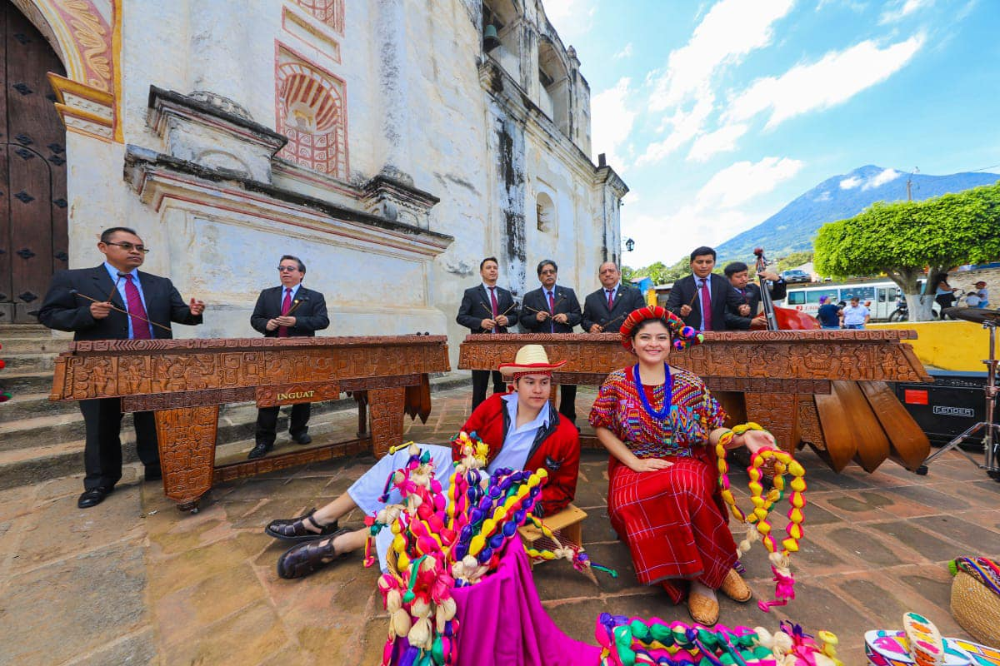
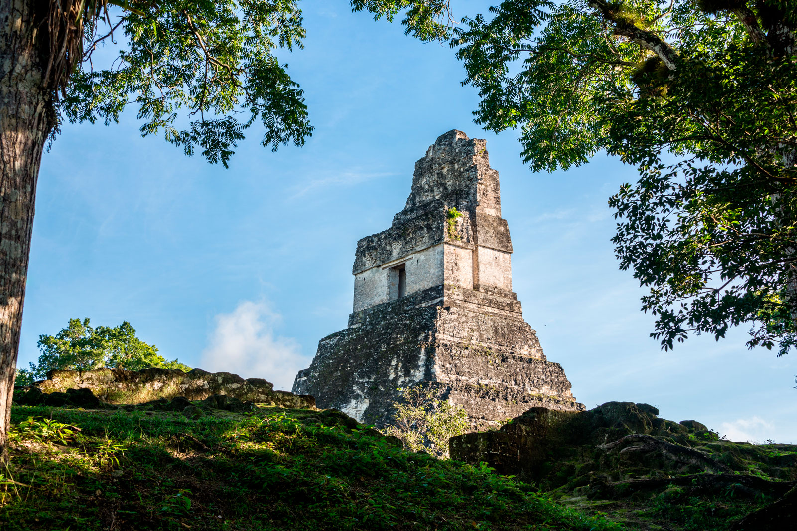
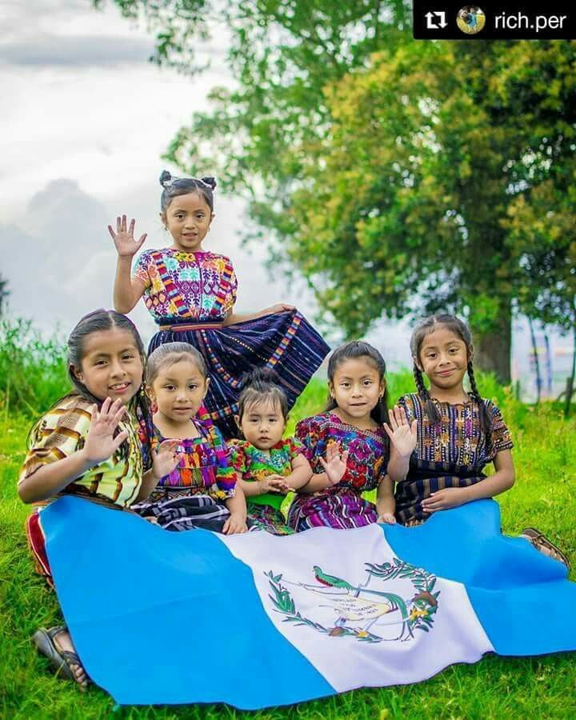
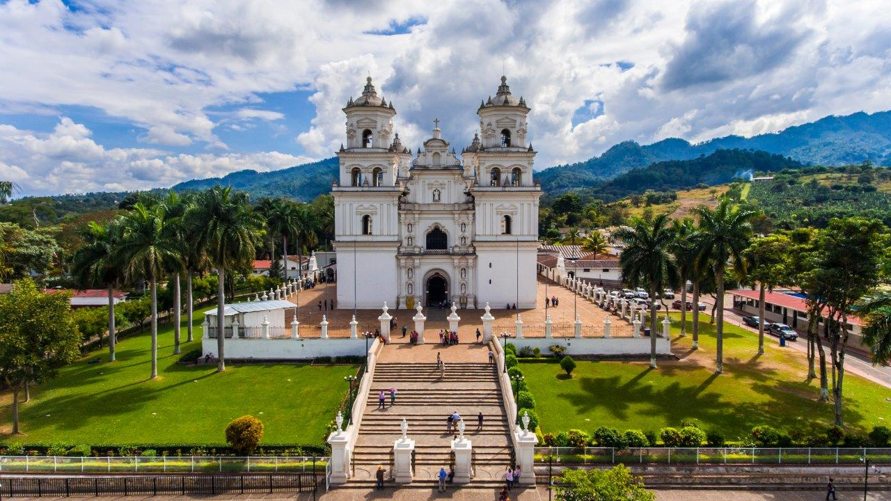

TopSpotsGT es una plataforma digital creada con el objetivo de promover y dar a conocer los mejores lugares de Guatemala. Reunimos información de cafés, restaurantes, lugares turísticos y centros comerciales para que tanto guatemaltecos como visitantes descubran lo mejor que nuestro país tiene para ofrecer.
Nuestro propósito es brindar recomendaciones confiables, actualizadas y visualmente atractivas que faciliten la búsqueda de experiencias únicas en cada rincón de Guatemala.

Promover y conectar a las personas con los mejores lugares de Guatemala, brindando información útil, confiable y actualizada que inspire nuevas experiencias.
Ser la plataforma digital líder en Guatemala en recomendaciones de lugares, reconocida por su calidad, confianza e impulso al turismo local.
La idea nace de nuestra pasión por Guatemala y del deseo de tener un sitio confiable donde encontrar los mejores lugares para compartir, disfrutar y crear recuerdos.

La riqueza cultural de Guatemala
La belleza de nuestros paisajes

Nuestra gente y tradiciones

Impulsar el turismo local